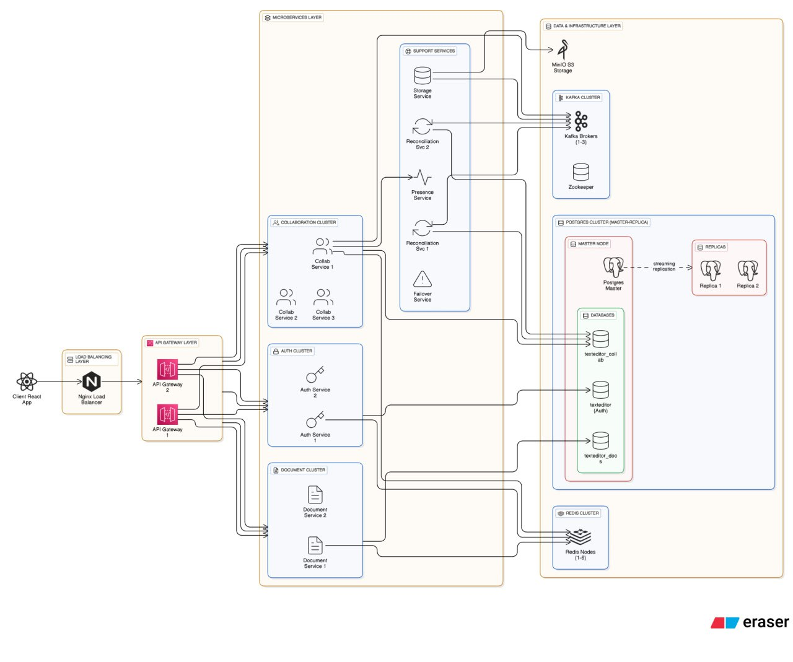
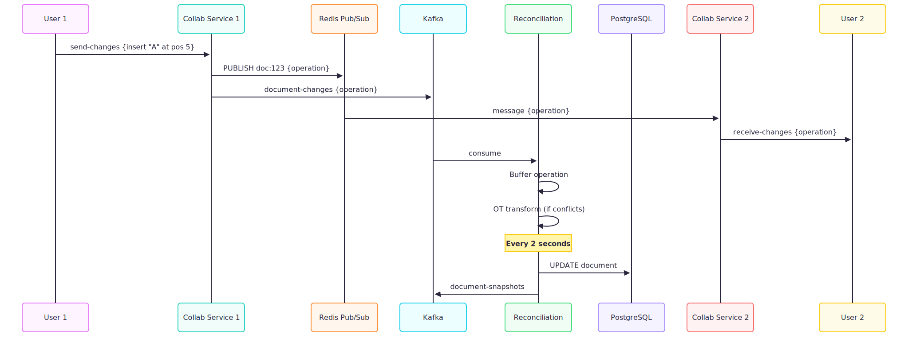
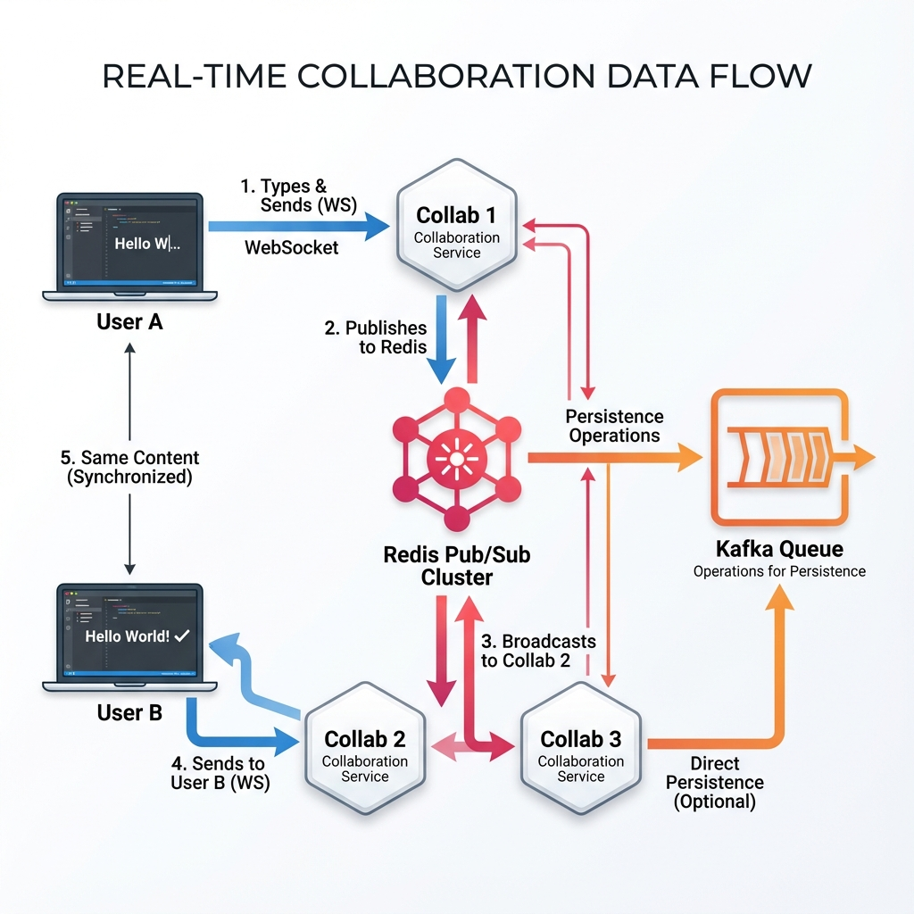
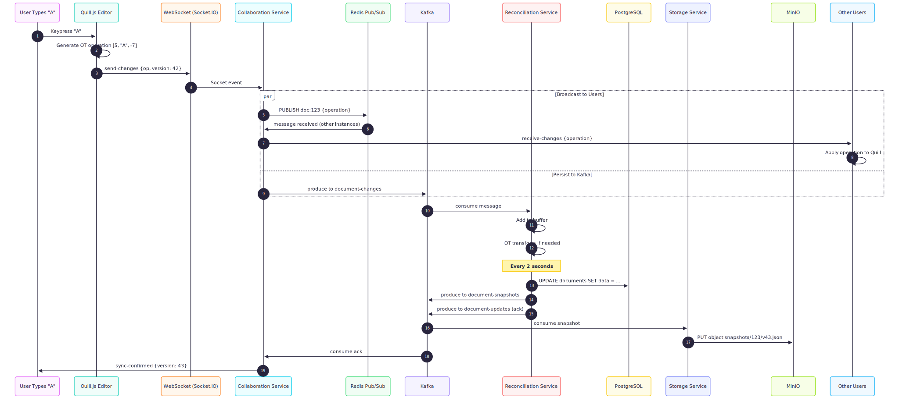
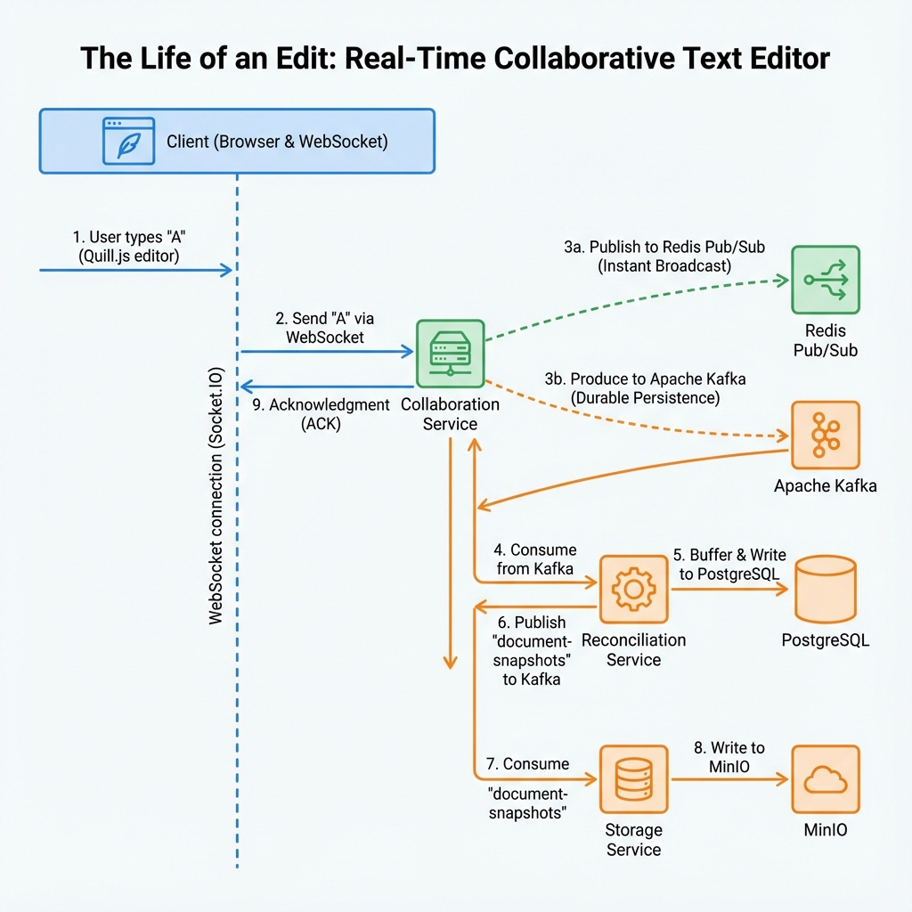
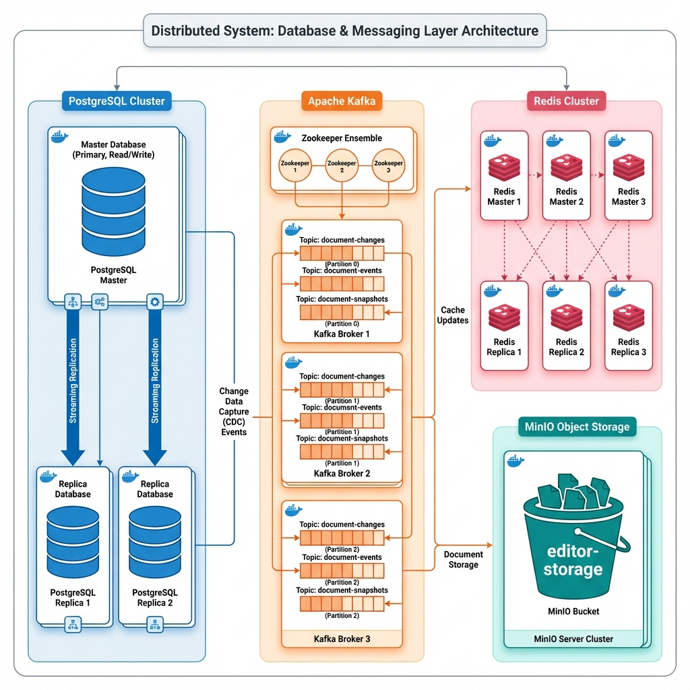
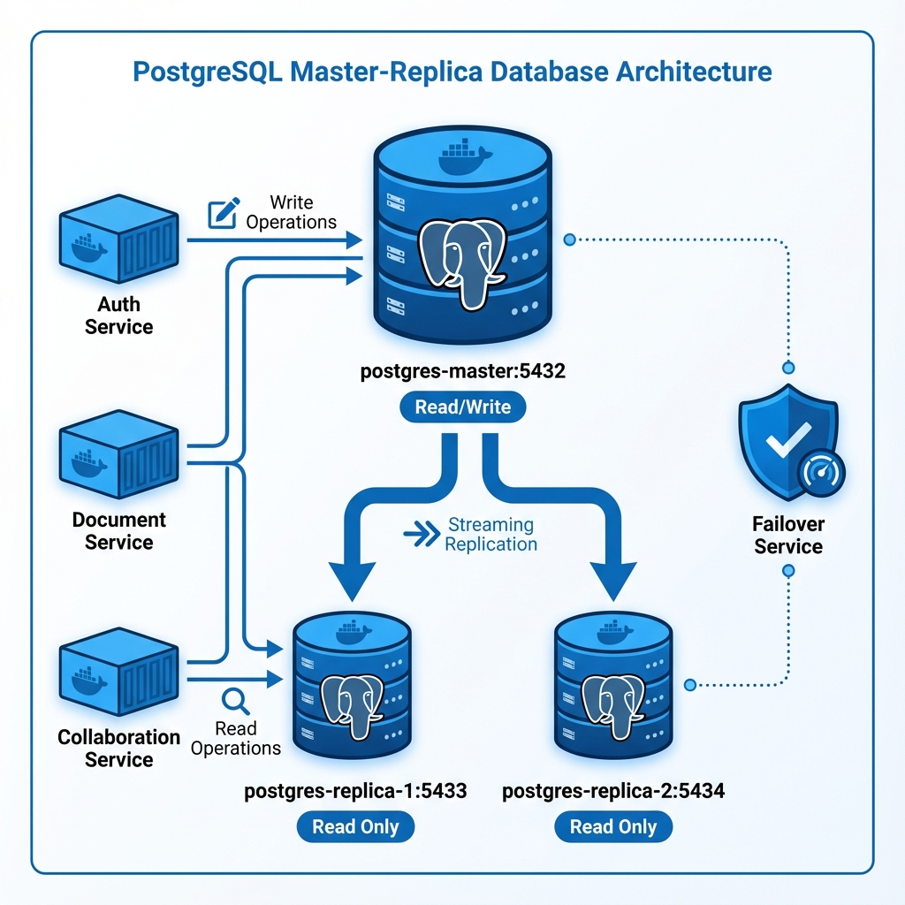

Infrastructure: Event Streaming (Kafka)
Detailed view of Kafka Producers, Topics, and Consumers.

Distributed Systems
We moved away from a monolith to solve specific challenges in real-time collaboration.
| Challenge | Capability Added | How We Put It To Use |
|---|---|---|
| Scale | Microservices | Separated Collaboration (CPU-heavy) from Auth (I/O-heavy) so they scale independently. |
| Data Loss | Event Streaming (Kafka) | Decoupled writing. Users keep typing, and we safely queue every keystroke for background persistence. |
| Latency | In-Memory Mesh (Redis) | Created a "shared brain" for servers. Users on different nodes communicate instantly via Pub/Sub. |
| Downtime | Replication | Added database replicas and failover services. If the Master crashes, the system self-heals. |
A Google Docs-like real-time collaborative text editor built with a scalable microservices architecture.
The big picture view of the entire system (Vector View).
Core vs. Support services (Vector View).
WebSocket + Redis + Kafka flow (Vector View).
WebSocket + Redis + Kafka flow (Rendered View).
Sequence diagram of a single keystroke (Vector View).
Sequence diagram of a single keystroke (Rendered View).
Complete infrastructure map including MinIO and Zookeeper.
Detailed view of Kafka Producers, Topics, and Consumers.
Detailed view of Redis Cluster topology.
PostgreSQL Master-Replica setup (Vector View).
PostgreSQL Master-Replica setup (Rendered View).
| Category | Tech Stack |
|---|---|
| Frontend | React.js, Quill.js |
| Backend | Node.js, Express |
| Gateway | NGINX, Custom Gateway |
| Database | PostgreSQL, Redis |
| Messaging | Apache Kafka |
| Storage | MinIO |
| DevOps | Docker, Docker Compose |
Distributed Collaborative Text Editor
Scalable, Resilient, Real-Time.